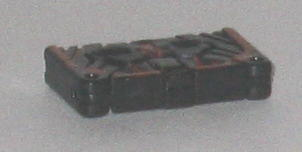
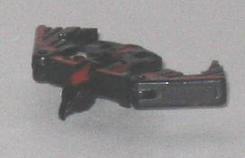
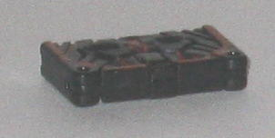
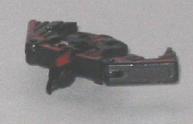
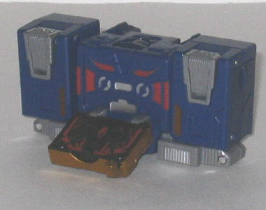
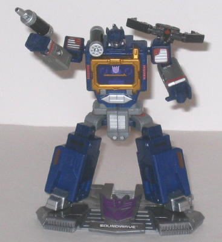

 
Difficulty of Transformation : Very Easy
Color Scheme : Black and dull red
Individual Rating : 5.5
Allegiance
: Decepticon
 Laserbeak
Laserbeak


Difficulty of Transformation
: Very
Easy
Color Scheme
: Black and dull red
Individual Rating
: 5.5
What's a shame this time
around is that Laserbeak's alternate mode isn't really a tape, just a black
box. There's no detailing whatsoever that could be construed as being tape-like,
though at least all the red "feather" lines everywhere look pretty cool.
I mean, I understand Laserbeak is REALLY small, but still, some tape-like
detailing couldn't have hurt.
Laserbeak's bird mode
is fairly good, considering the scale. Just like on the
original
G1 toy
, his wings can move back-and-forth at the shoulders, and his
head can move up and down. His legs can't move at all, however, and they're
a bit small proportionally to begin with. There's also a pretty noticeable
gap in the main body behind his neck, however, and his head is a bit fat
proportionally. It's also a bit of a bummer he doesn't have any diecast
in him-- I was looking forward to a teeny diecast Laserbeak...
 Soundwave
Soundwave


Difficulty of Transformation:
Easy
Color Scheme
: Dark blue, gray, and
some dull metallic bronze, silver, black, transparent purple, and dull
red
Individual Rating
: 6.2
Soundwave's cassette
player mode honestly doesn't resemble an actual cassette player as much
as it should. For one, the sides of the cassette player are slightly bigger
than the middle section, which Soundwave's particular model of cassette
player never had. Also, the actual cassette chamber doesn't look "real"
enough-- for one, the mechanical "tape player interior" details on the
inside of the chamber look pretty fake and cartoony, and the actual tape
chamber STICKS OUT from the main body fo the cassette player, instead of
being mostly recessed in the main body like on a real tape player. Also,
the side pieces of this mode should have speaker-like detailing on them,
since they ARE speakers on real cassette players. Sadly, there's no such
mold detailing on those parts at all. It's also way too obvious that the
bottom parts of this mode are Soundwave's robot waist halves, as they don't
fit with their surrounding parts either in shape or color. The back of
the robot head is also pretty obvious on the top of this mode, and the
batteries on the backside are completely uncovered instead of having a
panel to slide over them like on the original G1 toy. (However, the + and
- symbols on the batteries and on the slots you slide them into when transforming
Soundwave into his cassette player mode is a pretty nice touch.) It's also
pretty obvious his robot arms are on the backside of this mode, as the
fists are blatantly visible. Not to mention that, even though he's compact
in this mode, Soundwave is pretty small for a 6" Titanium. Really, the
only positive thing I have to say about this mode besides the aforementioned
battery symbols is that the blue, gray, and gold color scheme still work
pretty well for ol' Soundwave, and that at least he has the play/rewind
etc. buttons molded on him, though at such a scale they can't be pressed
in or anything. He also has a fair number of paint apps and mold detailing,
which is always good.
Soundwave's robot mode
is mostly better than his cassette player mode, with few flaws outside
of one big one, which I'll get to in a moment. He has pretty good articulation,
as he can move at the shoulders (at two points), the elbows (at two points),
the head, the hips (at two points), and the knees. I also like that even
at this smaller scale, Soundwave still has his battery-gun and shoulder
missile launcher. His arms and chest are also well-proportioned, and he
also has some nifty little tabs on his shoulders that Laserbeak can perch
perfectly on. His head sculpt seems a little... off, though, the forehead
is a bit too big. His feet actually come out of the FRONT of his lower
legs, with the heels only around the center of lower leg, so Soundwave
is also a bit less stable than he otherwise would be. What's really atrocious
about this mode, however, is the absolutely ridiculous "diaper" pelvis.
It's WAY too large proportionally, to the point that once you transform
him, there's where your eyes immediately go. There's also supposed to be
tabs that keep Soundwave's upper legs in a lower position on the pelvis
so that his legs at least look a bit longer than they are, but the tabs
are entirely too weak and don't hold up under Soundwave's weight at all.
In addition, Soundwave's upper legs come off their tracks a bit too easily,
though at least they're easy to pop back on, and often people have complained
that Soundwave's legs collapse in on themselves too easily, though mine
doesn't have this problem. Also, in case you're wondering, Soundwave's
diecast parts are his chest, his lower arms, and his lower legs.]
Titanium Soundwave and
Laserbeak, quite honestly, are the worst the line has seen as of this writing
(2/07). Laserbeak is decent enough for the small scale, but Soundwave has
an unconvincing cassette player mode and an incredibly ridiculous-looking
waist in robot mode. Honestly, the ORIGINAL Soundwave toy looks better
than this, and considering that that toy is over 20 years old now, that's
just sad. Unless you're a completist, I'd recommend saving up a little
more and getting the G1 Reissue Soundwave instead.
Review by Beastbot